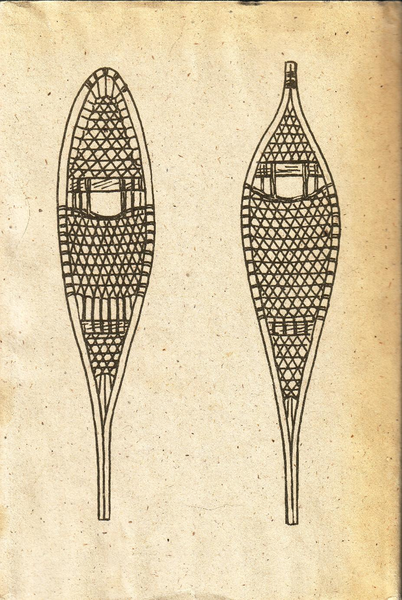

A survival kit for an aircraft should contain a personal kit along the lines mentioned above, plus a firearm and ammunition, an ax, a folding shovel, emergency rations (canned or freeze-dried), cooking utensils, tough plastic sheeting or a piece of canvas for shelter. All this should be in a kit bag or duffel bag. The aircraft should also carry sleeping bags plus a small tent.
FILE A FLIGHT PLAN
Just as aircraft file flight plans on where they are going, so should you. No one should ever venture into the wilderness without telling someone, preferably two or more people, where they are going and when they will be back.
If you are hiking, hunting, or fishing in the wilderness out of the main camp, tell your partners in which direction you are going. Arrange a signal - three shots or a signal flare fired from a rifle for a specific hour at night if one of you fails to return by nightfall. If you are going on a wilderness canoe trip, tell the forest ranger or local game warden when you expect to be back, with instructions that if you are two days late to organize a search.
If you are camped alone somewhere and are going out for a day's hike, leave a note at your campsite telling where you are going and when you expect to be back. If you have driven to a spot to fish or hike for a day, leave a note on your car windshield.
CHAPTER 19 THE OUTDOORSMAN'S FIRST-AID KIT
The old Boy Scout motto - Be Prepared - may sound like a corny cliche but its meaning is still very applicable to every outdoorsman. No one should go on a canoe trip, a fishing trip, or a camping trip without an adequate first-aid kit and, of course, some knowledge of first aid.
There are many first-aid kits on the market for use in an automobile. Some are simply junk, but others are well conceived and equipped. The better kits are ideal for an automobile camping trip, but they are too bulky and heavy for the backpacker, the canoe tripper, the hiker, or even the hunter or fisherman going on a fly-in or horseback trip.
Here is a plan for a first-aid kit that is light enough and small enough to be packed along on any wilderness trip, yet it can be used to treat everything from a fairly serious cut to dysentery. This kit was designed by E. Russell Kodet, M.D., and was described in Outdoor Life magazine some years ago. I have assembled one of these kits and have found it to be extremely useful. Some of the contents have yet to be used, but a day may come when they will be needed.
There is no substitute for immediate medical attention when a serious injury has occurred. But on wilderness trips, medical attention is generally hours, if not days, away. And even on outings near hospitals and doctors, immediate first aid can minimize discomfort and pain and even prevent death.
Now for the kit. The only liquid that this kit contains is eyedrops. Liquids are heavy and they frequently spill. There is also no alcohol or antiseptic in this kit. Although many first-aid books, particularly the older ones, recommend that cuts and scratches be doused liberally with alcohol or antiseptics to kill germs, these materials also kill living tissue. Germs grow best in dead or devitalized tissue, and certainly devitalized tissue heals more slowly than healthy tissue.
The best way to treat cuts and scratches is to wash them with soap and water and dress them. If the wound is oozing, a plastic-like absorbent tissue such as Telfa should be placed over the wound first to prevent sticking. Then the wound should be dressed. The gauze recommended for this kit is the Kling type. This gauze adheres to itself, thereby making it easier to use. A gaping wound should be brought together with a "butterfly" plastic tape. In areas where there is a fair amount of movement, a butterfly may not do the job. A suture may be needed. No one should attempt sutures - even if he knows how if the victim can be taken to a doctor. But if a doctor is days away, there may be no other choice. Making a stitch or suture is not difficult. Since the wound is generally painful already and the nerves lying close to the skin are frequently severed by the cut, the needle causes less pain than one might suspect. No pain killers such as Novocaine are used, because syringes and needles require special precautions that just don't fit into the scheme of a first-aid kit such as this.
Suturing packages can be bought with the needle already attached to the suture material. They come in different thicknesses, but 3-0 is suitable for everything except the face. The cut should be washed and dried, and then stitched. The needle is held in a hemostat, a sort of small, medical, needle-nosed plier that locks. The hemostat has other uses in the wilderness as well, such as removing thorns and slivers.
Stitches should always be taken only through the skin, never deeper. After the knot is tied the ends are left one-quarter inch long to make removal (after about seven days) easier. No suturing should ever be attempted near the eyes by a layman. The one advantage of suturing is that it usually stops the bleeding very quickly, and this makes the injured person feel much more at ease.
Eyedrops that will act as a local anesthetic and treat inflammation or infection can be very useful on a wilderness trip. An outdoorsman's eyes are very susceptible to injury. A branch can whip back and hit him in the face; wood chips from chopping wood present a hazard; cinders from a campfire are hazardous; and snow blindness can occur from participation in winter sports such as snowshoeing. ski touring, snowmobiling, ice fishing, or hunting in winter. In high altitudes, one can get conjunctivitis which has symptoms like snow blindness. One good eyedrop remedy is a mixture of equal parts of
Pontocaine and Neohydeltrasol. A drop every two or three hours is the recommended dosage. The treated eye will lose its ability to blink. which protects and cleanses it from dust, so cover it with a clean handkerchief or at least stay out of windy places. This will wear off in approximately two hours.
Hikers, backpackers, and hunters going into the mountains frequently get headaches due to the high altitude, but after the first day or two they usually adjust to the thinner air. Aspirin can be taken for headache relief, but often it is not enough. An Empirin compound is more effective. This can also be used to relieve pain due to sunburn, poison-ivy rash, or sprains. It has no effect on pain stemming from internal organs.
Nausea and intestinal cramps can be treated with Tridol or Campazinc. The dosage rates vary depending on the weight of the tablets; a dozen tablets should be ample. If continuous vomiting occurs, get medical help fast. It could be something serious.
For severe infections, blood poisoning, and pneumonia, strong antibiotics are needed. The kit should contain penicillin or Achromycin. Ten tablets should be ample. But you must be careful with penicillin.
Some persons are allergic to it, and treating someone with penicillin who does not know whether or not he is allergic can be hazardous.
Diarrhoea can also be a problem, particularly when traveling in the wilderness of Africa or South
America. Tainted foods or water are frequent causes of this. Lomotil tablets give relief. Eighteen tablets should be ample for any emergency. Sulfasuxidine is also good for sterilizing the intestines. The kit should include some tablets for relief of constipation, which can be caused by a change in diet.
If you have any recurring health problems, the kit should contain necessary medication to treat it. This should be spare. medication in excess of what you will need.
Many of the drugs I have suggested can be obtained only with a doctor's prescription, so consult with your family physician. Most family doctors will give you the necessary prescriptions once they know what these drugs are to be used for. It is not a bad idea to consult him about the contents of your first-aid kit. He may have valuable suggestions. Some doctors may have trepidations about some of the treatments (for example, the suturing), but when they realize that you would stitch a victim only when you are four days of hard paddling away from medical help, they will see the point.
The kit I have suggested costs about twenty dollars to assemble. It weighs no more than six ounces including the pouch that it is kept in. If you make substitutions in the kit, keep weight and bulk in mind.
The following is a list of the proposed contents of a first-aid kit:
Band Aids gauze flats Kling roller bandage butterflies tape suture packages hemostat scalpel blades (or small scissors) nausea and cramp tablets dysentery and anticonstipation tablets antibiotics Empirin compound eyedrops
CHAPTER 20 FIRST AID IN THE OUTDOORS
Everyone should know a bit of first aid, but such knowledge is even more essential for an outdoorsman who frequently is far from a hospital or doctor. Knowing what to do when a calamity strikes could ease pain or suffering, and even prevent death.
The basic techniques for first aid are simple. There is no reason for not knowing them. With a little knowledge of first aid and a firstaid kit such as the one described in the previous chapter, you can handle most minor mishaps.
GENERAL RULES
Whether treating a victim of an accident or illness, there are several basic rules you must follow in administering first aid. They are:
1. Remain calm. Carry out your first-aid tasks quickly, quietly, and with an absolute minimum of fuss and panic.
2. Check the breathing of the victim. Give artificial respiration if breathing has stopped. With this procedure, every second counts.
3. Check bleeding. Do not touch burns or injuries with your bare hands.
4. Do not move the patient unless you are certain he can be moved safely.
5. Reassure the patient and keep him calm, warm, and comfortable.
6. Do not administer liquids to an unconscious person.
7. Watch for symptoms of shock.
8. Do not attempt too much. Do the minimum that is essential to save life and to prevent the condition from worsening; but remember, you are only a layman.
There are two types of afflictions that can mar an outdoor trip accidents and illnesses. The following will give you a brief idea of what to do in the case of the more common types of accidents and illnesses.
There are several good books available on general first-aid procedures, one of which is put out by the St.
John Ambulance Association, the volunteer first-aid organization.
ACCIDENTS
Cuts, Scrapes, Abrasions. These types of wounds are fairly common in the outdoors, resulting from falls, misuse of knives, and so on. What generally has to be done in these cases is to stop the bleeding and prevent any infection. Make the patient sit or lie down. Blood escapes with far less force when the patient sits quietly, and still less force when the patient is prone. Elevate the bleeding part, except in the case of a fractured limb. It is important to remember not to remove any blood clot that has already formed. Remove any foreign bodies that are visible in the wound and around it, by picking or wiping these off with a piece of clean dressing. Apply and maintain pressure until the bleeding stops. Apply a dressing pad and a bandage.
In the case of lacerations stop the bleeding as quickly as possible by applying hand pressure above the wound; then apply a dressing pad.
In the case of very severe lacerations, a constrictive bandage, such as a tourniquet, may have to be used to stop or retard hemorrhaging. Be sure to loosen the bandage every fifteen minutes so that the remainder of the limb receives an adequate supply of blood.
In the case of hemorrhage, pressure will have to be applied to the part of the wound from which the blood is coming. If a foreign body or a broken bone is present in the wound, press alongside it and not over it. Dress the wound and continue the application of pressure until the bleeding stops.
Fractures The most important thing to remember with a fracture is to treat it on the spot. You should never try to move the casualty until the fractured part has been immobilized, unless, of course, the life of the patient is in danger from some other cause. If circumstances dictate that final immobilization cannot be completed on the spot, then sufficient temporary immobilization should be carried out so that the patient can be moved safely to another location. Generally speaking, hemorrhages and severe wounds should be dealt with before fractures.
Fractures can be immobilized by the use of bandages and splints. Be careful when applying either of these - there may be more than one broken bone involved. Bandages must be applied firmly enough to prevent harmful movement, but they must not be so tight as to prevent blood circulation. In the case of a broken limb, swelling may occur and then the bandages will become too tight. If this happens, loosen them.
Splints should be long enough to immobilize the joint both above and below the fracture. They must be firm and preferably wide and they should also be well padded. Splints can be improvised from staffs, ski poles, pieces of wood, or even from stiff cardboard. Once the fractured limb has been immobilized the patient should be moved out very carefully to medical help.
Burns It is important when treating burns to avoid handling the affected areas any more than necessary.
Always make sure that your hands are as clean as possible. Do not apply lotions of any kind. Do not remove burnt clothing, and do not break any blisters that may form. Cover the burn with a prepared, dry, sterile dressing from your first-aid kit. You can bandage the burned area firmly while seeking medical help, but if there are blisters present on the burn, bandage only lightly.
Sunburn All outdoorsmen like to get out in the hot summer sun, but watch out for sunburn! Prevention is the best cure for sunburn. Sunburn is treated in much the same way as other bums. If the sunburn is severe, an antiseptic emulsion can be applied freely and covered with a dressing or bandage. Leave the dressing on. Do not break any blisters that may form. And remember, sunburn can also occur on a bright day in winter.
Windburn Windburn can also be a problem in the out-of-doors. It can be treated in much the same way as sunburn, but it, too, can be prevented by wearing proper clothing and by covering exposed areas of flesh with a lotion or cream to prevent the skin from drying out on windy days.
Heat Exhaustion, Heat Stroke, and Sun Stroke All are very serious if you are far away from medical help. The best treatment for all of these is to place the patient in the coolest spot possible, to remove his clothing, and to sprinkle him with water or wrap him in a wet sheet and fan him. The idea here is to lower his body temperature. But take care not to lower the temperature too much. When the temperature has been lowered, wrap the patient in a dry sheet and continue to fan him. If his temperature rises again, repeat the treatment. In the case of heat exhaustion, the patient may complain of feeling cold. If he does, keep him comfortably warm. Watch his body temperature carefully.
Heart Attacks It is very difficult, if not impossible, for first-aid laymen to tell if a person who becomes faint or unconscious is suffering from a heart attack. If you are going into the outdoors with someone who is known to have a heart condition, he will probably have medication with him. Find out beforehand where his medication is kept and what the dosages are.
In the case of a suspected heart attack, move the patient as little as possible. Support him in a sitting position, as a failing heart works more economically this way than lying down. Be careful not to let him fall forward. Also, undo any tight clothing around the neck or waist to lessen any impediment to blood circulation or breathing. Get the patient medical aid as soon as you can.
Frostbite Frostbite and freezing are dangerous because they may become extensive before you are fully aware of them. If you engage in a lot of winter sports, you should be on the alert for freezing.
As soon as frostbite is recognized, thaw the frostbitten area by applying heat. For frostbite spots on the face, a warm hand will sometimes suffice. Make certain the area is dry. Do not rub or massage the frostbitten area. This may cause the tissues that are fragile when frozen to break. Do not apply snow.
Because snow is at air temperature, it will only make the frostbite worse.
If a hand or foot is frozen, warm it very gradually, and in the meantime, massage the parts adjacent to the frostbitten area so that circulation will be increased. The patient can drink warm fluids, but you must be careful not to apply any heat directly to the frozen part. After thawing has taken place, an antiseptic emulsion can be applied and the area can be bandaged. Swelling, redness, and most likely blistering will occur sometime after the frostbitten part has been thawed. Get the patient to a doctor as soon as possible.
Snowblindness Snowblindness is becoming increasingly frequent due to the growing popularity of winter sports such as snowmobiling, snowshoeing, and cross-country skiing. Snowblindness is literally a
"burning" of the eyes caused by light reflected in all directions from snow. Treatment consists mainly of shielding the eyes from light. Put a bandage around the eyes and get the victim to medical aid as soon as possible. The victim will probably need an opthalmic ointment and a week or more of care to cure his eyes. Incidentally, people who have suffered from snowblindness before are more susceptible to it.
Blisters Blisters are one of the medical scourges of the outdoors. Every outdoorsman, at one time or another, gets a blister on his foot from a pair of boots that just do not agree with him. The best way to avoid blisters is to wear comfortable boots and good socks. Make sure your boots are well broken in before going on long hikes or trips. If blisters do occur, do not break them. Keep them bandaged with dry sterile gauze and let them dry up on their own.
Shock Shock is a condition of severe depression of the vital functions. It can occur in conjunction with most of the afflictions mentioned above. Shock is generally associated with changes in the circulatory system, mainly due to loss of whole blood or plasma. The severity of shock depends on the amount and rapidity of the blood loss. When treating any of the conditions mentioned above, always watch for signs of shock. General symptoms of shock may vary from a transient attack of faintness to a complete state of collapse. General signs include giddiness and faintness, coldness, nausea, pallor, cold clammy skin, a slow pulse rate which tends to become progressively worse, vomiting, and unconsciousness.
Shock is treated by laying the victim on his back with his head low and turned to one side (unless there is an injury to the head or chest). Reassure the patient and loosen clothing about the neck, chest, and waist. Wrap him in something warm. If he complains of thirst, give him sips of water, tea, or some other liquid, but no alcohol. Do not apply heat or friction to the limbs. Get the patient to a doctor as soon as possible.
ILLNESSES
Illnesses are not very often encountered in the out-of-doors. Perhaps the most common ones are diarrhoea and constipation due to change of habits and change of food. Any first-aid kit should contain medication to combat either of these afflictions, but if the conditions persist, the patient should go to a doctor.
Nausea can occur on canoeing or boating trips to people who are prone to seasickness. If you are prone to seasickness, take along some anti-nausea pills (available in any pharmacy).
People who suffer from hayfever or other allergies sometimes have problems in the outdoors during the late summer and early fall because of the amount of weed pollen in the air. People with known allergies should carry their prescribed medications with them.
Anyone going on a trip into the outdoors who has a particular medical problem should make certain that he has enough prescribed medication with him for the trip and in case of possible emergency. If you have any medications that should be taken at specific times or for specific purposes, let your outdoor partner know about them.
A knowledge of first aid is particularly important in the out-of-doors because so often medical help is a fair distance away. But the most important thing to remember on your outdoor adventures is the old cliche about an ounce of prevention being worth more than a pound of cure.
In this book, I have tried to pass on many of the elemental skills and some of the basic know-how that everyone who ventures into the outdoors should have. Some sections have dealt only with pleasures and esthetics, others have dealt with practical knowledge, and some are for emergency use only.
But equally important, I have tried to give a glimpse, a basic insight, into the rational use of the outdoors. There are times when it is just as wrong to lead a string of pack-horses over a mountain meadow as it is to shoot a bull elk. But there are times when both can be done without nature being the loser. The real outdoorsman knows the right and the wrong things, the right and wrong times.

Document Outline file____C__Documents%20and%20Settings_Administrator_Desktop_New%20Folder%20(4)_KNAP,%20Jerome%20J%20-%20The%20Complete%20Outdoorsman's%20Handbook%20(TXT).pdf file____C__Documents%20and%20Settings_Administrator_Desktop_New%20Folder%20(4)_KNAP,%20Jerome%20J%20-%20The%20Complete%20Outdoorsman's%20Handbook%20(TXT).pdf
Local Disk file:///C|/Documents%20and%20Settings/Administrator/Desktop/New%20Folder%20(4)/KNAP,%20Jerome%20J%20-%20The%20Complete%20Outdoorsman's%20Handbook%20(TXT).txt